了解多端的物理形态差异，及人因上的影响，考虑最佳的交互方式、信息量&内容布局 基于宽屏上“更多显示”、“更加沉浸”、“更高效率”、“悬停创新”的设计原则，挖掘增值体验。
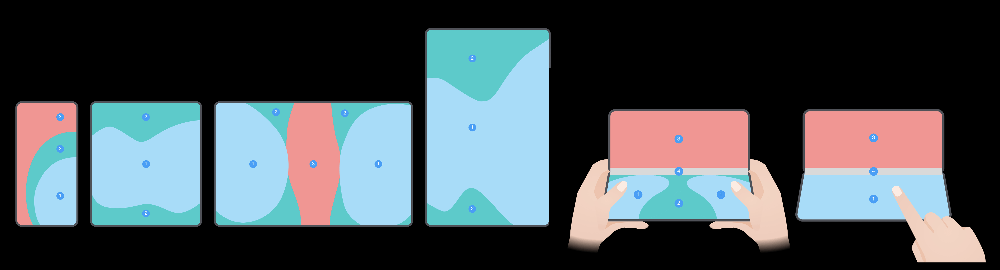
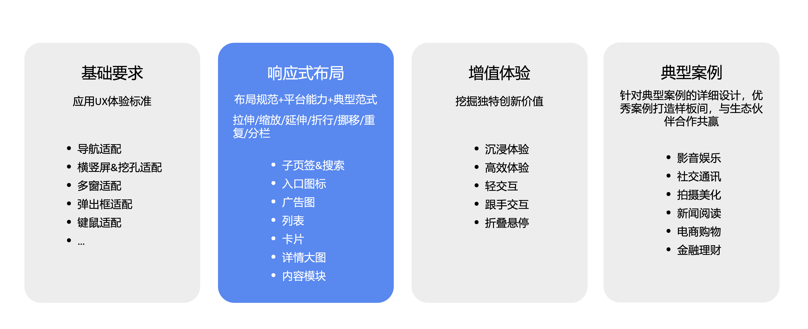
响应式布局方法
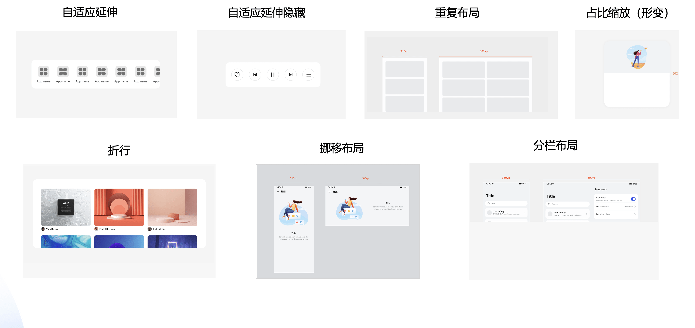
案例
沉浸广告图的自适应延伸布局：影音娱乐、电商、生活服务、金融理财等需要打造沉浸感或营销氛围的场景，可使用沉浸广告图 背景和内容分层，背景横向铺满，广告元素延伸布局，横屏不超过0.5倍屏幕高度，竖屏不超过0.4倍屏幕高度。
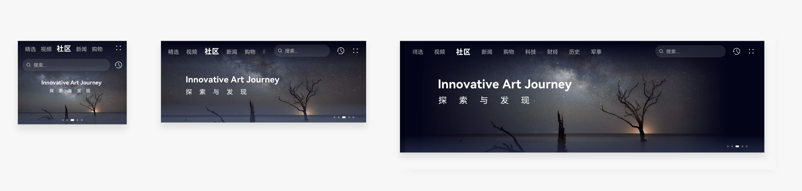
宽屏设备上，沉浸式Banner切换为卡片Banner：
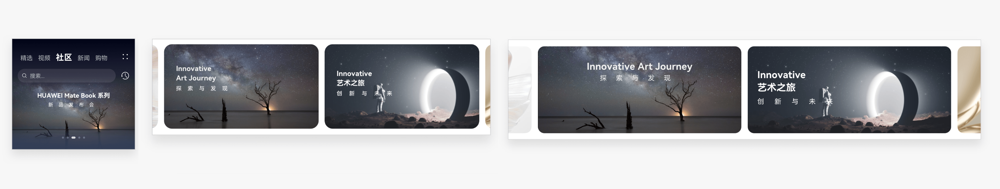
卡片广告图的延伸布局+挪移布局：
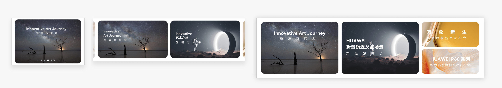
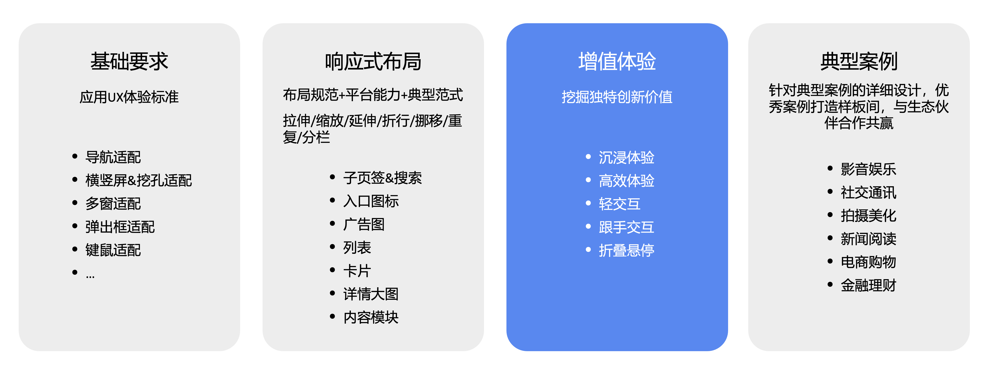
增值体验的设计方法
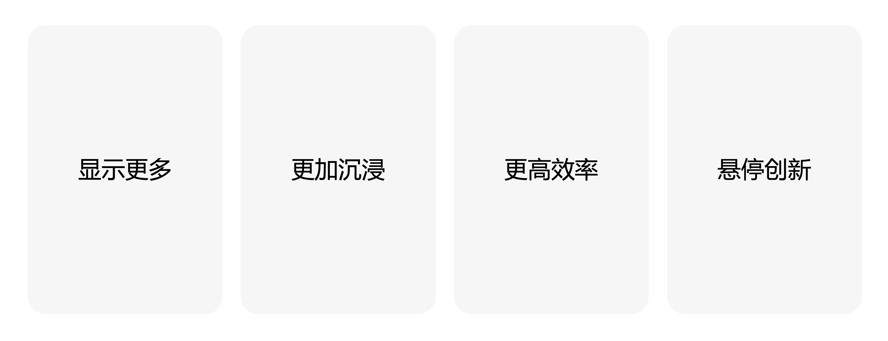
显示更多
边看边评：在宽屏设备上进行图文阅读时，右侧提供评论、相关推荐、关键词解析等更多相关辅助信息。
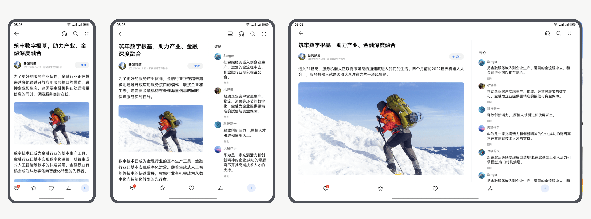
更加沉浸
沉浸观影 折叠屏上全屏播放视频不旋转，不中断观影体验。
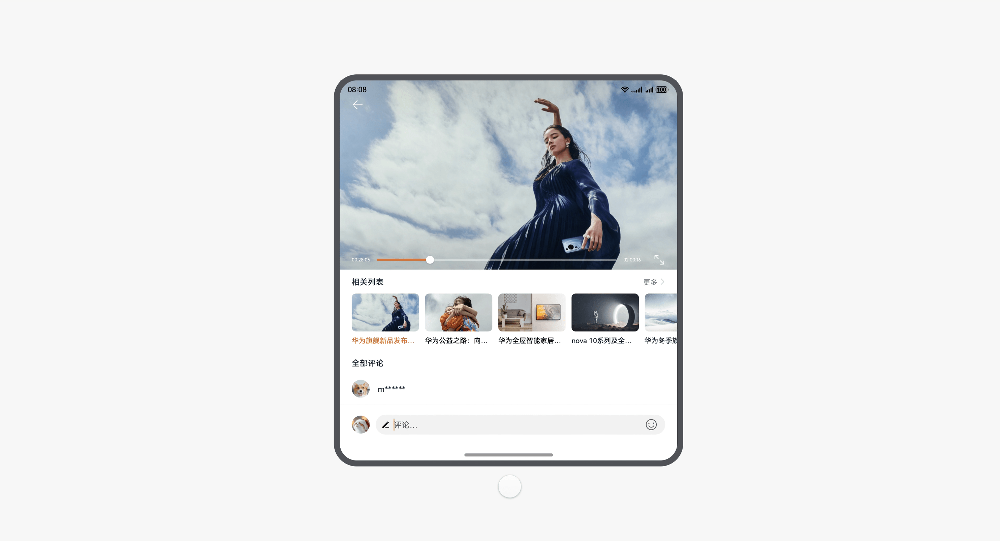
弹幕吸顶：弹幕尽量在留黑的位置显示，减少对视频画面的遮挡。
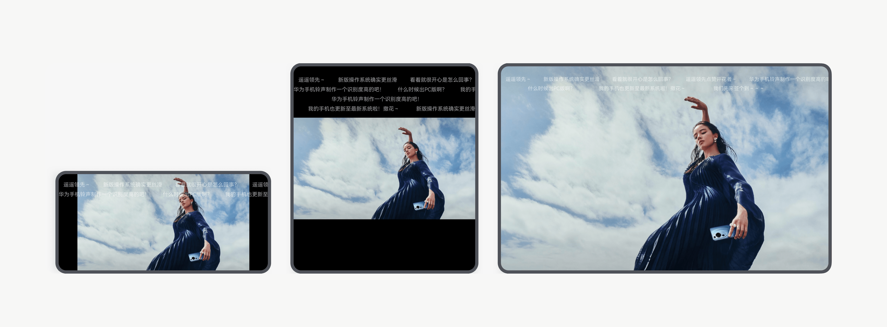
侧边面板：播放视频时，在侧边面板内执行其他相关操作，视频画面被推挤，避免对视频画面的遮挡。
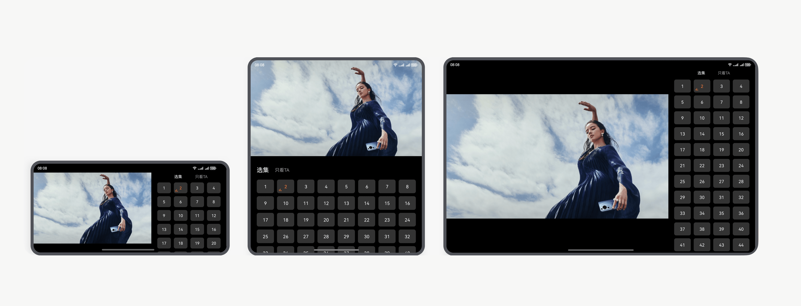
更高效率
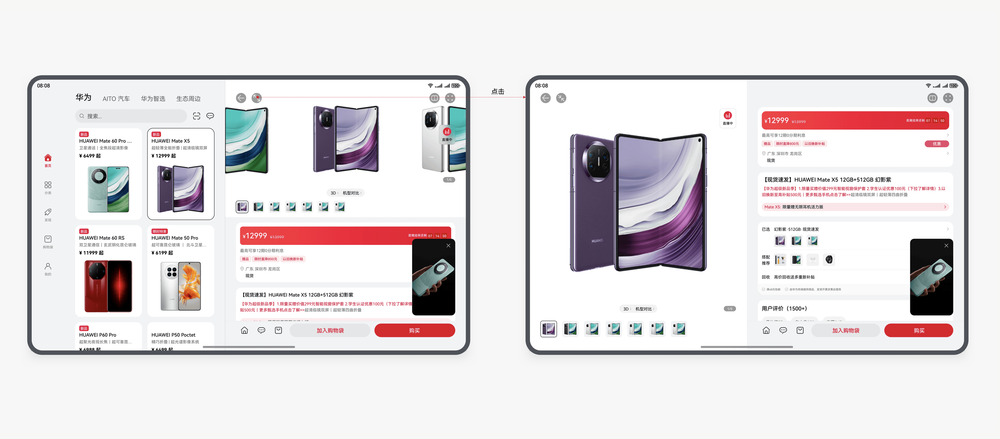
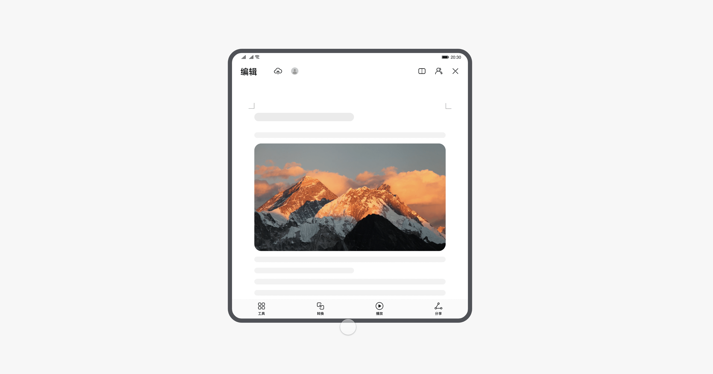
悬停适配
交互类控件，在下半屏易交互区域显示：
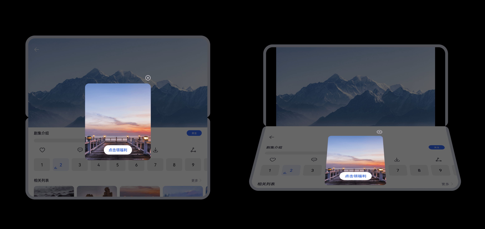
上下文关联的控件，和其触发元素在同一侧屏幕内显示：
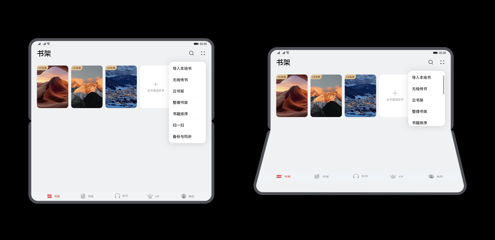